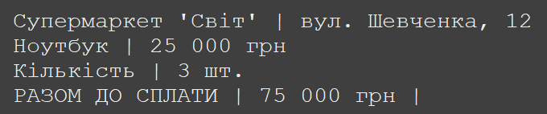
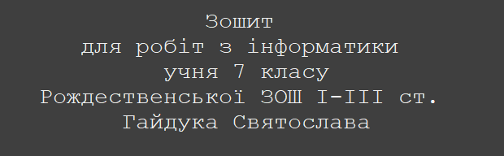

У цьому розділі ти дізнаєшся про переваги мови Python в порівнянні з іншими мовами. Навчися створювати свою першу просту програму, яка буде виводити текст на екран. Та дізнаєшся як додавати коментарі до коду, щоб зробити його більш зрозумілим для себе та інших програмістів.
Python – багатоцільова мова програмування, яка дозволяє писати код, що добре читається. Відносний лаконізм мови Python дозволяє створити програму, яка буде набагато коротшою від свого аналога, написаного на іншій мові. Також у Python можна писати програми використовуючи як структурне так і об'єктно-орієнтоване програмування. Це робить Python дуже гнучким та зручним для розробки різноманітних програм, від простих скриптів до складних веб-додатків та наукових обчислень. Python є багатоплатформовою мовою програмування - це означає, що програми на Python можна запускати в різних операційних системах без будь-яких змін.
На мій суб'єктивний погляд, Python - це одна з найкращих мов для вивчення програмування. Вона має простий та зрозумілий синтаксис, що дозволяє швидко навчитися писати код. Крім того, Python має велику спільноту розробників, яка створює безліч бібліотек та ресурсів для навчання. Це робить Python ідеальним вибором для тих, хто тільки починає свій шлях у світі програмування.
Програмний код, який ти пишеш, може бути складним для розуміння, особливо якщо він містить багато рядків або складну логіку. Тому важливо використовувати коментарі, щоб пояснити, що робить кожна частина коду.
Коментарі - це текстові пояснення, які не виконуються програмою, але допомагають зрозуміти, що робить код. Вони можуть бути однорядковими або багаторядковими.
Однорядкові коментарі починаються з символу #. Все, що знаходиться після цього символу в рядку, буде ігноруватися програмою. Наприклад:
# Це однорядковий коментар
print("Привіт, світ!") # Це також коментар
Багаторядкові коментарі використовуються для пояснення більш складних частин коду або для написання довгих пояснень. Вони починаються і закінчуються потрійними лапками (''' або """). Наприклад:
'''
Це багаторядковий коментар.
Він може займати кілька рядків.
'''
print("Привіт, світ!")
Виведення даних на екран здійснюється за допомогою функції print() - результатом роботи якої є форматований рядок. Вона може приймати різні типи даних, такі як рядки, числа, списки та інші. Дана функція також дозволяє форматувати вивід, використовуючи спеціальні символи та методи форматування.
Тепер, коли дещо знаєш про функцію print(), ти готовий написати ствою першу програму та зробити перші кроки у програмуванні. Не бійся експериментувати - пиши власний код. Пам'ятай, що практика - це ключ до успіху в програмуванні!
Приклад твоєї першої програми
print("Привіт, світ!")
де, print() – ім'я функції, яка дозволяє виводити інформацію на екран монітора.
Доволі часто потрібно виводити текст не в один, а в декілька рядків, у такому випадку використаємо символ нового рядка (\n).
print("Вересень\nЖовтень\nЛистопад")Додаткові параметри форматування рядків
| Метод | Опис |
|---|---|
| lower() | Перетворює всі символи рядка на малі літери. Наприклад: print("Привіт, Світ!".lower()) - виведе: привіт, світ! |
| upper() | Перетворює всі символи рядка на великі літери. Наприклад: print("Привіт, Світ!".upper()) - виведе: ПРИВІТ, СВІТ! |
| capitalize() | Перетворює перший символ рядка на великий, решту - на малі. Наприклад: print("привіт, світ!".capitalize()) - виведе: Привіт, світ! |
| title() | Перетворює перший символ кожного слова на великий, решту - на малі. Наприклад: print("привіт, світ!".title()) - виведе: Привіт, Світ! |
| swapcase() | Перетворює великі літери на малі, а малі - на великі. Наприклад: print("Привіт, Світ!".swapcase()) - виведе: ПРИВІТ, сВІТ! |
| /n | Переносить текст на новий рядок. Наприклад: print("Привіт, світ!\nЯ вчусь програмувати!") |
| sep = " " | Встановлює роздільник між аргументами функції print(). Наприклад: print("12", "06", "2026", sep="-") - виведе: 12-06-2026. |
| end = " " | Встановлює символ, який додається після кожного аргументу функції print(). Наприклад: print("Привіт, світ!", end="\n") - виведе: Привіт, світ!, а потім перенесе курсор на новий рядок. Якщо ж використати end = " ", то після виведення тексту курсор залишиться на тому ж рядку. |
| + | Конкатенація - об'єднання рядків. Дозволяє об'єднати кілька рядків в один. Наприклад: print("Привіт, " + "світ!") - виведе: Привіт, світ! |
| * | Кон'юкція - повторення рядків. Дозволяє повторити рядок кілька разів. Наприклад: print("Привіт, світ!" * 3) - виведе: Привіт, світ!Привіт, світ!Привіт, світ! |
| print ( f ' ... ' ) | Виводить форматований рядок, який дозволяє вставляти значення змінних та виразів безпосередньо в текст, що робить код більш читабельним та зручним для написання. Наприклад: name = "Світ"; print(f"Привіт, {name}!") - виведе: Привіт, Світ! |
| :^ | Вирівнювання рядків. Дозволяє вирівняти рядок по центру з відступом 20 пікселів від лівого краю. Наприклад: print ( f ' { " Привіт, світ! " : ^ 20 } ') - виведе: Привіт, світ! |
1. Виведемо текст у декілька рядків.
print("Перший рядкок;\nДругий рядок;\nТретій рядок.")
# Виведе: >>>
# Перший рядкок;
# Другий рядок;
# Третій рядок.
2. Відформатуємо текст для виведення використовуючи сепаратор sep = .
print("Python", "Java", "C++", sep=" | ")
# Виведе: >>> Python | Java | C++
3. Відформатуємо текст для виведення використовуючи end = .
print("Python", end=" ")
print("Java", end=" ")
print("C++")
# Виведе: >>> Python Java C++
4. Об'єднаємо два рядки в один.
word1 = "Супер"
word2 = "код"
print(word1 + word2) # Виведе: >>> Суперкод
5. Повторимо рядок кілька разів.
word = "Суперкод"
print(word * 3) # Виведе: >>> СуперкодСуперкодСуперкod
6. Виведемо форматований рядок.
name = "Олексій"
age = 20
print(f"Привіт, мене звати {name}, мені {age} років. Наступного року буде {age + 1}.")
# Виведе: Привіт, мене звати Олексій, мені 20 років. Наступного року буде 21.
Генератор чеку (sep= та end=).
Напишіть послідовно чотири функції print() для створення чеку.
1. Перша виводить назву магазину та його адресу, розділені символом " | " (sep=).
2. Друга виводить кількість товару та його загальну вартість, розділені символом " | " (sep=).
3. Третя виводить кількість товару, розділену символом " | " (sep=).
4. Четверта виводить загальну суму чеку, розділену символом " | " (end=).
Очікуваний результат:

Початковий рівень
1. Напишіть програму, яка виводить на екран монітора повну назву вашої школи.
Середній рівень
1. Напишіть програму, яка виводить на екран монітора ваші прізвище та ім'я, кожне з нового рядка. Використайте лише одну функцію print() та символ нового рядка \n.
Достатній рівень
1. Напишіть програму, яка виводить на екран монітора сьогоднішню дату у форматі день:місяць:рік (наприклад: 12:06:2026). Вхідні дані - тектовий рядок у вигляді "12 06 2026". Використайте функцію print() та параметр sep = ":".
Високий рівень
1. Напишіть програму, яка підписує зошит з інформатики згідно зразка.
